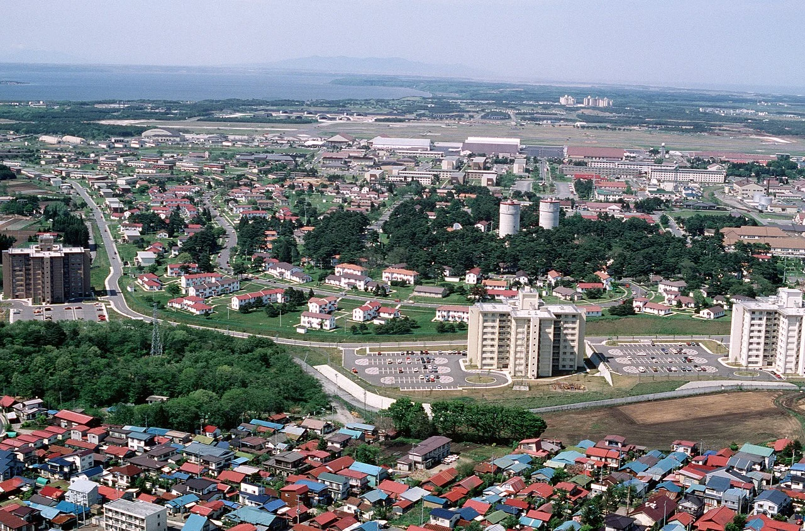

Misawa City - Chamber of Commerce
Home
Directory
Join
Discover

Join the Chamber of Commerce
Events
「商工会は行きます・聞きます・提案します」を合言葉に、 これからも地域の事業者や住民のみなさまがより暮らしやすいまちづくりに努めていきます。
Current Weather
Weather Forecast
Spotlighting Misawa City Businesses